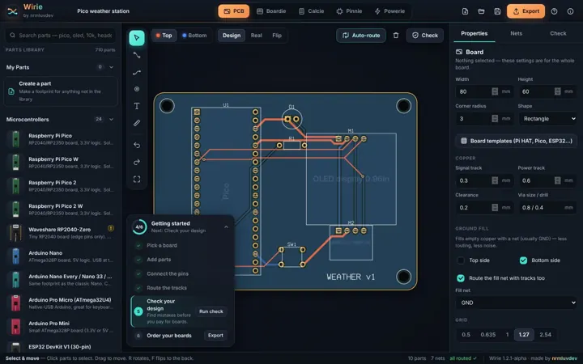
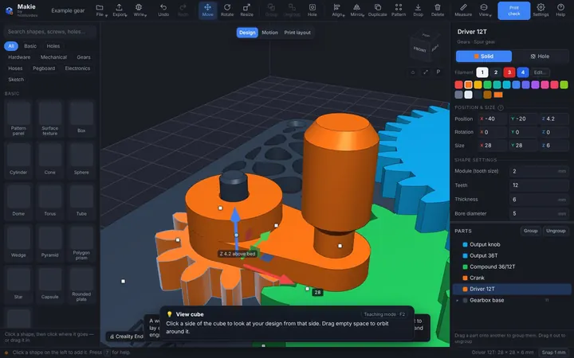
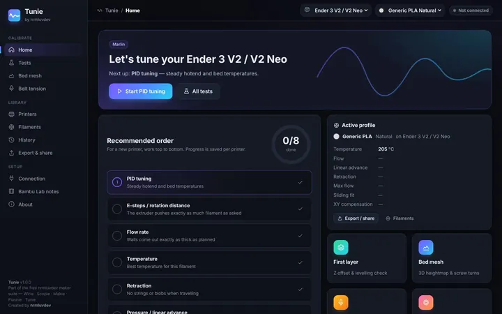
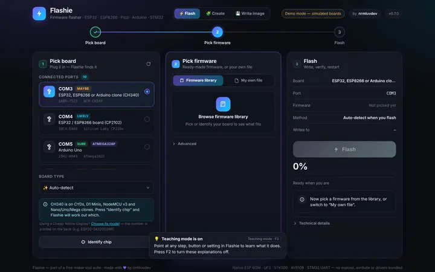
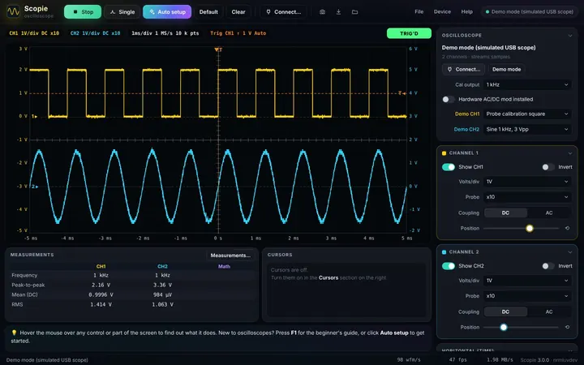
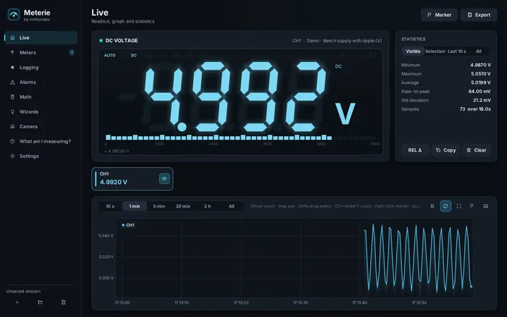
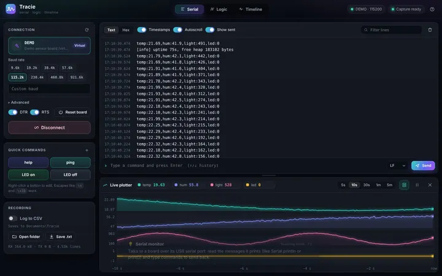
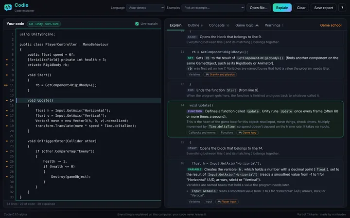

Every tool on your workbench, in one free program.
Design circuit boards and 3D prints, flash microcontrollers, write SD cards, and turn your PC into an oscilloscope, multimeter and serial monitor.
Tinkerie is in alpha. Every app works and you can use them today, but they're still being tested on real hardware, so expect a few rough edges and changes between versions.
Found something that doesn't work? Tell us on GitHub. It really helps.
What's in the box
Each app has its own page with screenshots, a getting-started guide and everything it can do.

Wirie
Design circuit boards and custom keyboards, plan stripboard builds, look up pinouts and work out battery life.

Makie
A Tinkercad-style 3D designer with threads, gears, boxes, cases and hundreds of ready parts.

Tunie
Print a test, measure it, type the number in, and Tunie tells you the new setting.

Flashie
Flash ESP32, Pico, Arduino and STM32 boards, build programs from blocks, make keyboard firmware, and write SD cards and USB installers.

Scopie
A friendly oscilloscope app for Hantek, Rigol, Siglent, OWON, PicoScope and more.

Meterie
Connect your multimeter to show huge readings, graph them, log them and run guided tests.

Tracie
A serial monitor with a live plotter, plus a logic analyser that decodes UART, I²C and SPI.

Codie
A code explainer for 20+ languages, with a game-development section and a Game school.
Start with the getting-started guide
How to open Tinkerie on your computer, how teaching mode works, and an easy first thing to try in every app.
You don't need to know it all already
Every button explains itself
Teaching mode is on in every app. Point at anything and a card says what it does, in plain language. Press F2 when you don't need it any more.
Try it without hardware
Scopie, Meterie, Tracie and Flashie have demo modes with pretend scopes, meters and boards, so you can learn before you buy anything.
Nothing to set up
One program, no installer, no Python, no extra drivers for most things. Download it, open it, and pick an app.
From idea to working gadget
The apps share their work, so a project can flow from one to the next.
Get Tinkerie
The one marked "Your computer" should suit you. Each download has a READ ME FIRST file that explains how to start it.
Just run it. Or get the zip below if your network blocks .exe files. DownloadWindows (zip, with source)Tinkerie-0.9.0-alpha-windows.zip
The same program in a zip, with the source code. DownloadMac with M1, M2, M3 or M4Tinkerie-0.9.0-alpha-mac-apple-silicon.zip
macOS 11 or newer. DownloadMac with an Intel processorTinkerie-0.9.0-alpha-mac-intel.zip
macOS 11 or newer. DownloadLinux PC (64-bit)Tinkerie-0.9.0-alpha-linux-x86_64.tar.gz
Intel or AMD processor. DownloadRaspberry Pi OS 64-bitTinkerie-0.9.0-alpha-pi-64bit.tar.gz
Pi 3, 4, 5 and newer. DownloadRaspberry Pi OS 32-bitTinkerie-0.9.0-alpha-pi-32bit.tar.gz
Pi 2, 3, 4, 5 and Zero 2 W. Download
Windows: see the Code signing policy. Free code signing provided by SignPath.io, certificate by SignPath Foundation.
Good to know
What does "alpha" mean?
Tinkerie works and you can use every app today, but it's still young. Some features haven't been tried on every board, scope, meter or computer yet, and things may change between versions. If something doesn't work, please report it on GitHub: that's how alpha software gets better.
Is Tinkerie really free?
Yes. Tinkerie is free software under the GNU GPL (version 3 or later). You can use it, share it and change it. There are no adverts, accounts or subscriptions.
Do I need to install anything?
No. Tinkerie is one program. On Windows you just double-click Tinkerie.exe. On Linux and Raspberry Pi, ./install.sh adds it to your menu if you'd like it there.
Windows says it's an unrecognised app. Is that OK?
Windows warns about any program that isn't signed with a paid certificate. Click More info, then Run anyway. The full source code is on GitHub if you'd like to check it.
My Mac won't open it.
The first time, macOS blocks apps from outside the App Store. Open it once, then go to System Settings › Privacy & Security and click Open Anyway.
I don't have any hardware yet. Can I still try it?
Yes. Wirie, Makie and Calcie need no hardware at all, and Scopie, Meterie, Tracie and Flashie all have demo modes with pretend devices.
How do I learn what a button does?
Point at it. Every app has teaching mode, which explains each button, setting and panel in plain language. Press F2 to turn the explanations off or back on.
Does it need the internet?
Only for downloads: Flashie's firmware library and OS images. Everything else works offline.
I found a bug, or my board / scope / meter doesn't work.
Please open an issue on GitHub and say which app, which computer, and what happened.